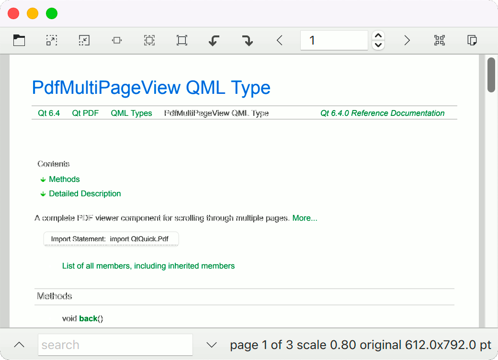

PDF Multipage Viewer Example
A Qt Quick PDF viewer that allows scrolling through the pages.

PDF Multipage Viewer demonstrates how to use the PdfMultiPageView component to render PDF documents and search for text in them.
Running the Example
To run the example from Qt Creator, open the Welcome mode and select the example from Examples. For more information, visit Building and Running an Example.
Creating the Main Window
Instantiate an ApplicationWindow, bind its title to the title of the PDF document, and create a toolbar:
ApplicationWindow { id: root width: 800 height: 1024 color: "lightgrey" title: doc.title visible: true property string source // for main.cpp header: ToolBar { RowLayout { anchors.fill: parent anchors.rightMargin: 6
The toolbar has buttons for most of the common actions:
ToolButton {
action: Action {
shortcut: StandardKey.Open
icon.source: "qrc:/pdfviewer/resources/document-open.svg"
onTriggered: fileDialog.open()
}
}
ToolButton {
action: Action {
shortcut: StandardKey.ZoomIn
enabled: view.renderScale < 10
icon.source: "qrc:/pdfviewer/resources/zoom-in.svg"
onTriggered: view.renderScale *= Math.sqrt(2)
}
}
ToolButton {
action: Action {
shortcut: StandardKey.ZoomOut
Declare a PdfDocument and bind the status property and passwordRequired signal to inform the user when an error occurs or a password is required:
Dialog {
id: passwordDialog
title: "Password"
standardButtons: Dialog.Ok | Dialog.Cancel
modal: true
closePolicy: Popup.CloseOnEscape
anchors.centerIn: parent
width: 300
contentItem: TextField {
id: passwordField
placeholderText: qsTr("Please provide the password")
echoMode: TextInput.Password
width: parent.width
onAccepted: passwordDialog.accept()
}
onOpened: passwordField.forceActiveFocus()
onAccepted: doc.password = passwordField.text
}
Dialog {
id: errorDialog
title: "Error loading " + doc.source
standardButtons: Dialog.Close
modal: true
closePolicy: Popup.CloseOnEscape
anchors.centerIn: parent
width: 300
visible: doc.status === PdfDocument.Error
contentItem: Label {
id: errorField
text: doc.error
}
}
PdfDocument {
id: doc
source: Qt.resolvedUrl(root.source)
onPasswordRequired: passwordDialog.open()
}
Add the main component, PdfMultiPageView:
PdfMultiPageView {
id: view
anchors.fill: parent
anchors.leftMargin: sidebar.position * sidebar.width
document: doc
searchString: searchField.text
onCurrentPageChanged: currentPageSB.value = view.currentPage + 1
}
DropArea {
anchors.fill: parent
keys: ["text/uri-list"]
onEntered: (drag) => {
drag.accepted = (drag.proposedAction === Qt.MoveAction || drag.proposedAction === Qt.CopyAction) &&
drag.hasUrls && drag.urls[0].endsWith("pdf")
}
onDropped: (drop) => {
doc.source = drop.urls[0]
drop.acceptProposedAction()
}
}
A Drawer holds a ListView to show search results from the searchModel:
Drawer {
id: sidebar
edge: Qt.LeftEdge
modal: false
width: 300
y: root.header.height
height: view.height
dim: false
clip: true
TabBar {
id: sidebarTabs
x: -width
rotation: -90
transformOrigin: Item.TopRight
currentIndex: 2 // bookmarks by default
TabButton {
text: qsTr("Info")
}
TabButton {
text: qsTr("Search Results")
}
TabButton {
text: qsTr("Bookmarks")
}
TabButton {
text: qsTr("Pages")
}
}
GroupBox {
anchors.fill: parent
anchors.leftMargin: sidebarTabs.height
StackLayout {
anchors.fill: parent
currentIndex: sidebarTabs.currentIndex
component InfoField: TextInput {
width: parent.width
selectByMouse: true
readOnly: true
wrapMode: Text.WordWrap
}
Column {
spacing: 6
width: parent.width - 6
Label { font.bold: true; text: qsTr("Title") }
InfoField { text: doc.title }
Label { font.bold: true; text: qsTr("Author") }
InfoField { text: doc.author }
Label { font.bold: true; text: qsTr("Subject") }
InfoField { text: doc.subject }
Label { font.bold: true; text: qsTr("Keywords") }
InfoField { text: doc.keywords }
Label { font.bold: true; text: qsTr("Producer") }
InfoField { text: doc.producer }
Label { font.bold: true; text: qsTr("Creator") }
InfoField { text: doc.creator }
Label { font.bold: true; text: qsTr("Creation date") }
InfoField { text: doc.creationDate }
Label { font.bold: true; text: qsTr("Modification date") }
InfoField { text: doc.modificationDate }
}
ListView {
id: searchResultsList
implicitHeight: parent.height
model: view.searchModel
currentIndex: view.searchModel.currentResult
ScrollBar.vertical: ScrollBar { }
delegate: ItemDelegate {
id: resultDelegate
required property int index
required property int page
required property string contextBefore
required property string contextAfter
width: parent ? parent.width : 0
RowLayout {
anchors.fill: parent
spacing: 0
Label {
text: "Page " + (resultDelegate.page + 1) + ": "
}
Label {
text: resultDelegate.contextBefore
elide: Text.ElideLeft
horizontalAlignment: Text.AlignRight
Layout.fillWidth: true
Layout.preferredWidth: parent.width / 2
}
Label {
font.bold: true
text: view.searchString
width: implicitWidth
}
Label {
text: resultDelegate.contextAfter
elide: Text.ElideRight
Layout.fillWidth: true
Layout.preferredWidth: parent.width / 2
}
}
highlighted: ListView.isCurrentItem
onClicked: view.searchModel.currentResult = resultDelegate.index
}
}
TreeView {
id: bookmarksTree
implicitHeight: parent.height
implicitWidth: parent.width
columnWidthProvider: function() { return width }
delegate: TreeViewDelegate {
required property int page
required property point location
required property real zoom
onClicked: view.goToLocation(page, location, zoom)
}
model: PdfBookmarkModel {
document: doc
}
ScrollBar.vertical: ScrollBar { }
}
GridView {
id: thumbnailsView
implicitWidth: parent.width
implicitHeight: parent.height
model: doc.pageModel
cellWidth: width / 2
cellHeight: cellWidth + 10
delegate: Item {
required property int index
required property string label
required property size pointSize
width: thumbnailsView.cellWidth
height: thumbnailsView.cellHeight
Rectangle {
id: paper
width: image.width
height: image.height
x: (parent.width - width) / 2
y: (parent.height - height - pageNumber.height) / 2
PdfPageImage {
id: image
document: doc
currentFrame: index
asynchronous: true
fillMode: Image.PreserveAspectFit
property bool landscape: pointSize.width > pointSize.height
width: landscape ? thumbnailsView.cellWidth - 6
: height * pointSize.width / pointSize.height
height: landscape ? width * pointSize.height / pointSize.width
: thumbnailsView.cellHeight - 14
sourceSize.width: width
sourceSize.height: height
}
}
Text {
id: pageNumber
anchors.bottom: parent.bottom
anchors.horizontalCenter: parent.horizontalCenter
text: label
}
TapHandler {
onTapped: view.goToPage(index)
}
}
}
}
}
}
Finally, add a second toolbar as a footer, to hold the search field, search up/down buttons and some status information:
footer: ToolBar {
height: footerRow.implicitHeight + 6
RowLayout {
id: footerRow
anchors.fill: parent
ToolButton {
action: Action {
id: sidebarOpenAction
checkable: true
checked: sidebar.opened
icon.source: checked ? "qrc:/pdfviewer/resources/sidebar-collapse-left.svg" : "qrc:/pdfviewer/resources/sidebar-expand-left.svg"
onTriggered: sidebar.open()
}
ToolTip.visible: enabled && hovered
ToolTip.delay: 2000
ToolTip.text: "open sidebar"
}
ToolButton {
action: Action {
icon.source: "qrc:/pdfviewer/resources/go-up-search.svg"
shortcut: StandardKey.FindPrevious
onTriggered: view.searchBack()
}
ToolTip.visible: enabled && hovered
ToolTip.delay: 2000
ToolTip.text: "find previous"
}
TextField {
id: searchField
placeholderText: "search"
Layout.minimumWidth: 150
Layout.fillWidth: true
Layout.bottomMargin: 3
onAccepted: {
sidebar.open()
sidebarTabs.setCurrentIndex(1)
}
Image {
visible: searchField.text !== ""
source: "qrc:/pdfviewer/resources/edit-clear.svg"
sourceSize.height: searchField.height - 6
anchors {
right: parent.right
verticalCenter: parent.verticalCenter
margins: 3
}
TapHandler {
onTapped: searchField.clear()
}
}
}
ToolButton {
action: Action {
icon.source: "qrc:/pdfviewer/resources/go-down-search.svg"
shortcut: StandardKey.FindNext
onTriggered: view.searchForward()
}
ToolTip.visible: enabled && hovered
ToolTip.delay: 2000
ToolTip.text: "find next"
}
Label {
id: statusLabel
property size implicitPointSize: doc.pagePointSize(view.currentPage)
text: "page " + (currentPageSB.value) + " of " + doc.pageCount +
" scale " + view.renderScale.toFixed(2) +
" original " + implicitPointSize.width.toFixed(1) + "x" + implicitPointSize.height.toFixed(1) + " pt"
visible: doc.pageCount > 0
}
}
}
}